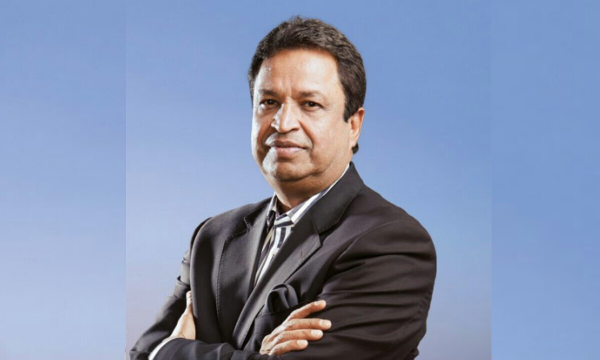

Binod Kumar Chaudhary is a Nepalese billionaire businessman, politician and philanthropist. He is the chairman and president of the Chaudhary Group. In February 2013, he was recognised as Nepal's wealthiest person and only billionaire, having an estimated net worth of $1 billion.His biggest assets are a controlling stake in Nepal's Nabil Bank and CG Foods, maker of the popular Wai Wai noodles. Wai Wai has overseas factories in India, Serbia and Bangladesh with a new one being constructed in Egypt. It plans to launch a range of sauces.
Binod Chaudhary
